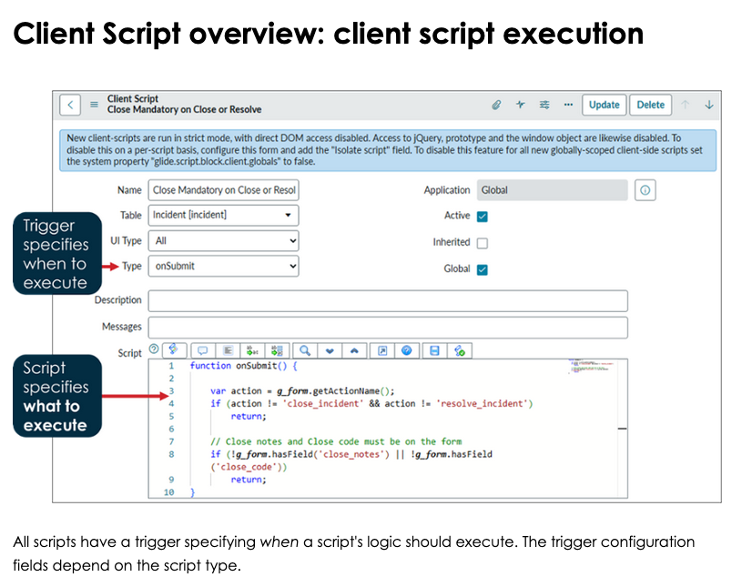

Client Script
Purpose
- Control form behavior (UX)
- React to user interaction
- Provide immediate feedback before submit
Client Scripts exist to improve the user experience — not to enforce data integrity.
Runs
- Client
- Trigger types:
- onLoad – when the form loads
- onChange – when a field value changes
- onSubmit – right before submit
- onCellEdit -
Client Scripts do not run for:
- imports
- integrations
- background scripts
- updates outside the UI

Use When
- Show / hide fields
- Make fields mandatory or read-only
- Client-side validation
- Default values for new records
- Field-to-field interactions
Do NOT use when:
- Data integrity is critical
- Logic must always run
- Updating records in the database
- Cross-table enforcement
If it must always happen → Business Rule
Touches
- Tables: current form table only
- Fields: via
g_form - APIs:
g_form.getValue()g_form.setValue()g_form.setMandatory()g_form.setVisible()g_form.setReadOnly()g_form.showFieldMsg()
g_formis the primary API for Client Scripts
Types of Client Scripts
onLoad
- Runs when the form loads
- Best for:
- initial visibility
- default values
- read-only setup
Note: Runs every time the form opens (new + existing records)
onChange
- Runs when a field value changes
- Most commonly used
- Best for:
- dynamic validation
- reacting to user input
Note: Can run frequently — keep logic light
onSubmit
- Runs right before submit
- Best for:
- final validation
- blocking submission
Note: Must return
trueorfalse
onCellEdit
Common Mistakes
- Trying to update the database
- Putting server logic in client scripts
- Forgetting users can bypass the UI
- Overusing onChange scripts
- Duplicating logic that belongs in Business Rules
Performance & Safety Rules
- Keep scripts small and focused
- Avoid loops in onChange
- GlideRecord is not available
- Never trust client data alone
- Pair with Business Rules for critical logic
1-Min Example
Requirement: If priority = 1 → justification is mandatory
Where:
onChange Client Script on priority
Logic:
- If priority == 1 → make justification mandatory
- Else → remove mandatory
Relationship to UI Policies
- UI Policies should be attempted first
- Client Scripts used when:
- logic is conditional
- calculations are needed
- UI Policies are too limited
Rule of thumb: UI Policy → Client Script → Business Rule
Mental Shortcut
Client Script = UX logic Business Rule = truth enforcement
Mental Shortcut
UI Policy = simple UI rules Client Script = advanced UI logic